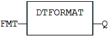
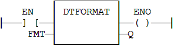

Function
Format the current date/time to a string with a custom format.
|
Name |
Type |
Description |
|
FMT |
STRING |
Format string. |
|
Name |
Type |
Description |
|
Q |
STRING |
String containing formatted date or time. |
Real Time clock may be not available on some targets. Please refer to OEM instructions for further details about available features.
The format string may contain any character. Some special markers beginning with the '%' character indicates a date/time information:
%Y Year including century (e.g. 2006)
%y Year without century (e.g. 06)
%m Month (1..12)
%d Day of the month (1..31)
%H Hours (0..23)
%M Minutes (0..59)
%S Seconds (0..59)
(* let's say we are at July 04th 2006, 18:45:20 *)
Q := DTFORMAT ('Today is %Y/%m/%d - %H:%M:%S');
(* Q is 'Today is 2006/07/04 - 18:45:20 *)
Q := DTFORMAT (FMT);

The function is executed only if EN is TRUE.
ENO keeps the same value as EN.

Op1: LD FMT
DTFORMAT
ST Q